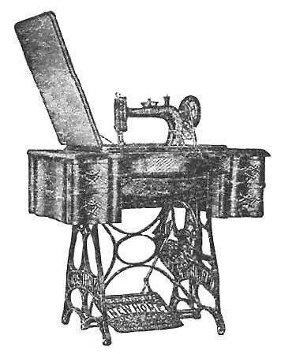
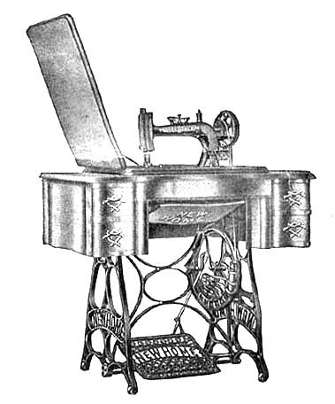
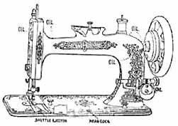
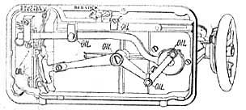
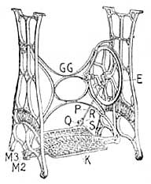
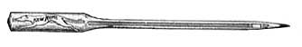
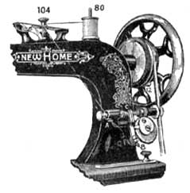
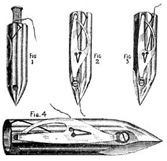

THE NEEDLEBAR
Online Manuals Section
D I R E C T I O N S
FOR USING THE
FLAT TENSION, VIBRATING SHUTTLE
NEW HOME
SERIES A
SEWING MACHINE

MANUFACTURED BY
THE NEW HOME SEWING MACHINE CO.,
MAIN OFFICE AND MANUFACTORIES,
ORANGE, MASS., U.S.A.
DISTRIBUTING OFFICES :
N.Y. CITY & EXPORT SALESROOM, 45 EAST 17TH STREET,
UNION SQUARE NORTH
LONDON OFFICE
CHICAGO SAN FRANCISCO
INDEX
| Bed Lock |
3
|
| Belt |
5
|
| Bobbin, How to Wind |
5
|
| Breaking Lower Thread |
7
|
| Breaking Upper Thread |
7
|
| Felling |
12
|
| Foot, To Remove |
10
|
| Foot, To Adjust |
9
|
| Gauge, Use of |
10
|
| General Remarks |
2
|
| Hemstitching |
10
|
| Hemming |
11
|
| Hemming and Sewing on Lace |
13
|
| Important |
2
|
| Illustrated Parts |
15
|
| List of Parts |
14
|
| Missing Stitches |
8
|
| Needles |
5
|
| Needle, To Set |
5
|
| Needles and Thread, To Select |
10
|
| Oil |
3
|
| Outfit |
11
|
| Parts of Stand and Cabinet |
16
|
| Quilting |
13
|
| Sewing, Ready for |
9
|
| Shuttle Ejector |
7
|
| Shuttle, To Thread |
6
|
| Shuttle, To Place |
7
|
| Shuttle Thread, To Draw Up |
8
|
| Stand, To Adjust |
4
|
| Stitch, Length of |
9
|
| Tension, To Regulate |
8
|
| Threading Machine |
7
|
| To Oil Machine |
3
|
| To the Learner |
2
|
| Treadle |
4
|
| Work, To Remove |
9
|
FOR OPERATING THE
FLAT TENSION,
VIBRATING SHUTTLE,
NEW HOME
Series A,
Sewing Machine

MANUFACTURED BY
THE NEW HOME SEWING MACHINE CO.,
MAIN OFFICE AND MANUFACTORIES,
ORANGE, - MASS., U.S.A.
DISTRIBUTING OFFICES:
N.Y. CITY & EXPORT SALESROOM, 48 EAST 17TH STREET,
(UNION SQUARE NORTH)
LONDON OFFICE: 24 - 26 DENMAN STREET, S.E.
CHICAGO - SAN FRANCISCO
Important
When you receive the machine you will observe a small tag attached to the bed of the machine by the screw which holds the head of the machine in place while in transit. Remove this screw as directed on the tag so the head can be turned back for oiling and cleaning. Do not replace the screw unless you desire to reship the machine, when it should be replaced.
To the Learner
A little time given to the study of the instructions before commencing to use the Machine, will be found of great advantage. Any one can learn to use the New Home. It is simple in construction, and requires so little change for any kind of work, that its operation can be easily understood.
Attention to the instructions here given, and a little practice, will soon enable the learner to successfully operate the Machine.
Do not attempt to use the Attachments until you can manage the Machine with ease on plain sewing.
The cause of a machine not working properly may be due to poor thread, or a size too large for the needle, or in the wrong adjustment of the tension.
If at any time the Machine fails to perform its work properly refer to the instruction book to ascertain the cause. This will help you out of the trouble if you carefully follow the directions.
For example, if your machine misses stitches, you turn to the index: (inside front cover) "Missing Stitches." On page 8 you read, "Should there at any time be skipped or long stitches at intervals, it is owing to the needle being set too low, or its having become best away from the shuttle, or its being too small for the thread in use, etc., etc." You will therefore be able to easily remedy the trouble. We advise a careful perusal of "General Remarks".
General Remarks
The presser foot must never be let down on the feed, unless when you are sewing and have cloth under it. When the shuttle is in, the machine must not be run with either of the shuttle slides out or partly open as the shuttle is liable to get out of position and break some portion of the machinery.
We caution purchasers to see that the manufacturers' plate number of the machine is plain and in good condition. If defaced or obliterated, it is sure evidence of fraud, and we will not warrant, or in any way be responsible for such machines. To avoid imposition buy only from us or authorized dealers.
Do not run the machine backward or with both threads in, without sewing.
Do not use a dull or bent needle, or draw the work faster than the feed will naturally carry it, as needles are frequently broken by failing to observe the latter caution.
When ordering parts always give the plate number of machine.
Poor oil is dearer than good oil, because it ruins the parts of the machine and does not last as long. It makes the machine run hard: corrodes and eats into the bearings, making them rough and hard to operate. It clogs and fills up the oil holes, so that, unless the operator carefully and laboriously picks out the holes, the oil cannot penetrate to the bearings and soon the machine begins to run hard. Be sure you get the best.
|

|
OIL THE UPPER PARTS AS HERE INDICATED. |
THE BEST OIL IS THE CHEAPEST.
OIL THE UNDER PARTS AS HERE INDICATED.

To Oil Machine
Oil the centers on which the driving wheel of stand turns, and where the foot piece rests on the rod. After the machine has been oiled, run it (with presser-foot up and shuttle out) for a minute, and then wipe off the superfluous oil. If the machine runs hard after standing idle for some time, use a little kerosene oil in the usual way and run rapidly, then wipe clean, and oil with the best prepared oil. Oil the bobbin-winder in places where there is any friction.
The head of the lock is depressed in the front of the bed-place. Push down on the lock head, this will release the machine head so it can be turned back and the parts can be oiled and cleaned.
The Treadle
Familiarity with the motion of the treadle is first to be learned, and practice is necessary in order to give a steady and uniform revolution to the driving wheel. The presser-foot, which holds the work in place on the feed, should be raised to prevent the feed from injury by contact with it. Place the feet on the treadle with instep directly over the rod upon which the treadle rests. Start the machine by placing the right hand upon the top of balance wheel and revolving it towards you, taking care to give it impetus enough; keep up a regular movement by pressing alternately with the heel and ball of the foot with equal effect. This should be practiced until a uniform motion of the wheel is obtained. Do not attempt to sew until you are familiar with the treadle movement.
To Adjust Stand
Every Sewing Machine of our manufacture is perfectly adjusted in all its parts when it leaves our factory. We illustrate below the different parts of the Stand to enable the inexperienced operator to properly adjust any part, should it in any way become loosened.

Should the Foot Plate (K) have nay play from right to left it needs adjusting; loosen the Plug Nut (M3) and adjust the Plug (M2) so that the Foot Plate will work evenly, taking care not to set the Plug too tightly against the Foot Plate to cause it to operate hard; if adjusted properly, it should work but with the slightest pressure. Should the Drive Wheel (E) not run true or evenly, loosen the Drive Wheel Crank Plug Screw (GG) and adjust the Plug so the Drive Wheel (E) has no play, but will run evenly, then screw tight. Should the Pitman (P) work too loose on Pitman Stud (Q), loosen nut on lower end of rod and turn the screw slightly to right and tighten nut.
The Belt
The belt should always be tight enough to prevent slipping. Should it become too loose, cut it to the desired length, observing to make a new hole at right angles with the grain side of the leather, that you may obtain its full strength.
Needles

WE MAKE OUR OWN NEEDLES, therefore, if you cannot get the genuine, with "NEW HOME" and our trade mark of a Greyhound stamped on the shank, write direct to us. Poor needles are responsible, many times, for skipped stitches.
To Set the Needle
First loosen the screw that clamps the needle and push to the left sufficient to allow the shank to enter; allow the needle (with the flat side of shank towards the needle bar) between the thumb and finger of the left hand, and insert the needle into the groove (as far up as it will go) under the clamp, and screw fast. Observe that the needle passes through the hole in the Throat Plate without touching either side. It it touches, take hold of it near its point, and press it gently in the opposite direction, until it is free.

To Wind Bobbin
Unlock the balance wheel with thumb and forefinger of the right hand by drawing the key (12) out, turning it part around, (this will save the trouble and annoyance of unthreading the needle and removing the work while the bobbin is being filled). Then swing the bobbin winder until it is in position and presses firmly against the belt. Place the spool of thread to be wound from on the spindle (80) and put the bobbin in the bobbin winder. Pass the thread from the spool, once around the tension screw (104) as shown in cut, thence down between the bobbin winder frame and wire guide at (A), then through slot (B) at bottom of thread guide, then into V shaped slot of thread guide at (C). To secure the end of thread preparatory to winding, place it between the head of the bobbin and its socket at the right hand. Proceed as in sewing. When the bobbin has been filled, swing the winder from belt and turn back the key (12) until it enters the hole and locks the balance wheel.
To Thread Shuttle
Take the shuttle in the left hand, with the point toward you; draw off about two inches of thread from the bobbin, thread running from the upper side, (se Fig. 1); drop the bobbin into the shuttle as far as it will go; then draw the thread into the open slot of shuttle, at the same time putting a little pressure with the finger on the end of bobbin; by drawing the thread toward you it will be forced under the point of shuttle spring, (see Fig. 2); then draw it back until it passes over the point; (see Fig. 3); shuttle is ready for sewing. Fig. 4 shows shuttle properly threaded, ready for sewing.

The tension is regulated by turning the screw in point of shuttle to the right or left; to the right to give more tension; to the left, to give less tension.
It will not generally be necessary to change the tension of shuttle for ordinary kinds of sewing.
To Place the Shuttle
Withdraw the front shuttle slide and place the shuttle in the carrier, point first, toward the operator; then close the slide. It is sometimes more convenient to withdraw the back shuttle slide and put the shuttle in its place when the carrier is at the back part of the machine. This is especially the case when some of the attachments are in use.
Shuttle Ejector
Pull out the front shuttle slide and press down on the ejector head, the shuttle will be raised and is easily removed.